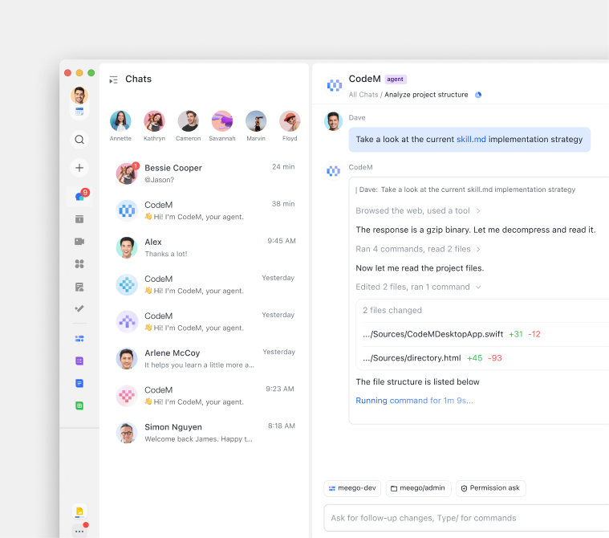
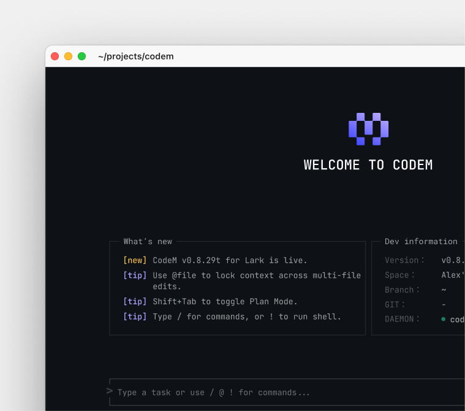
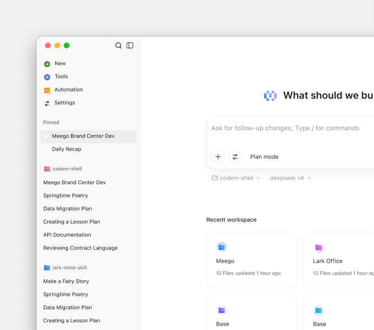
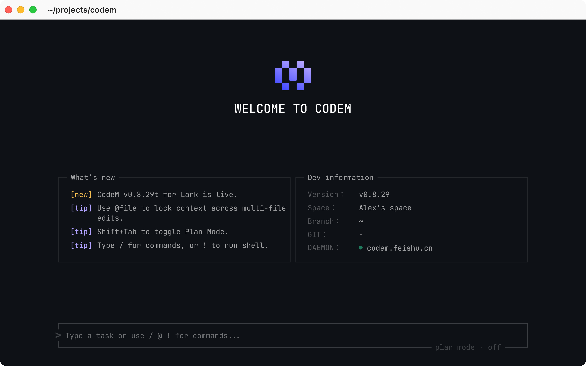
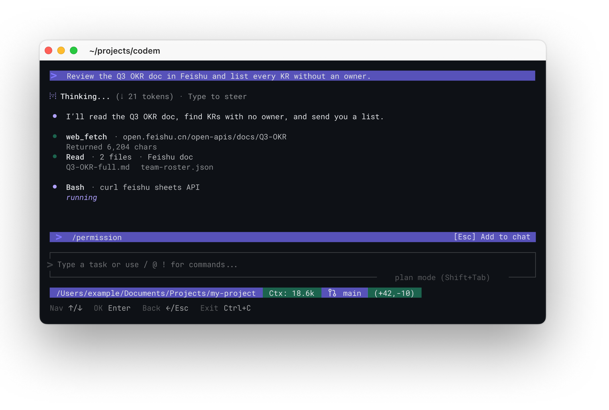
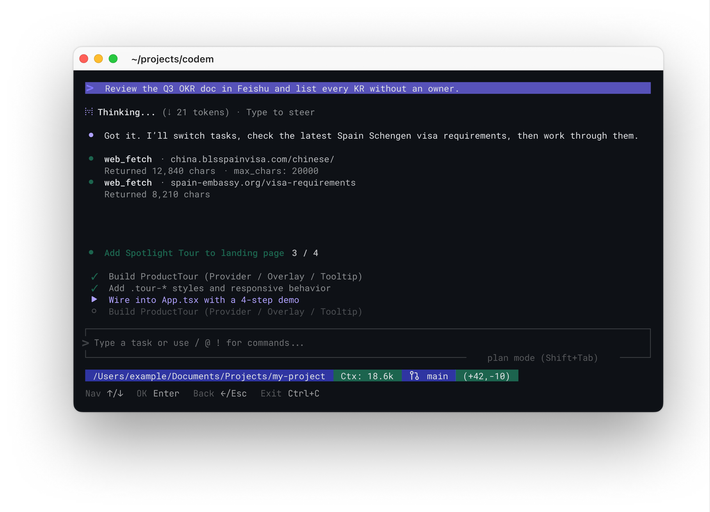
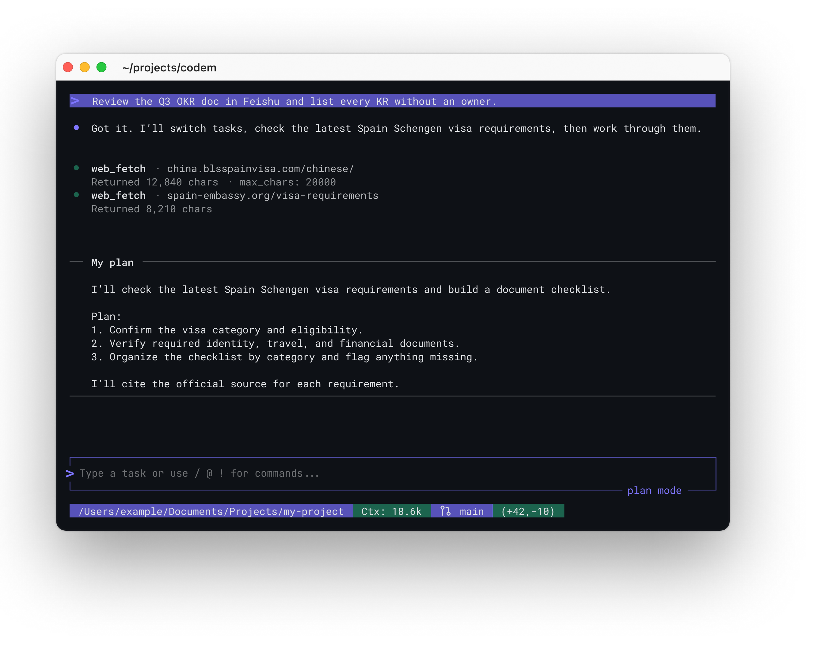
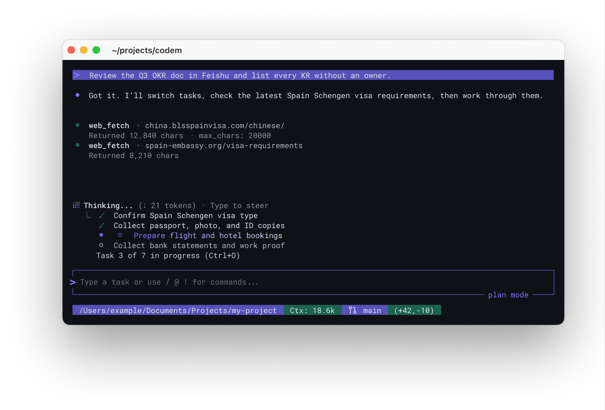
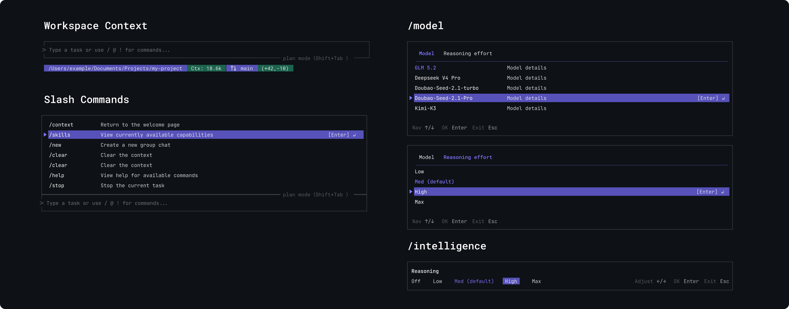
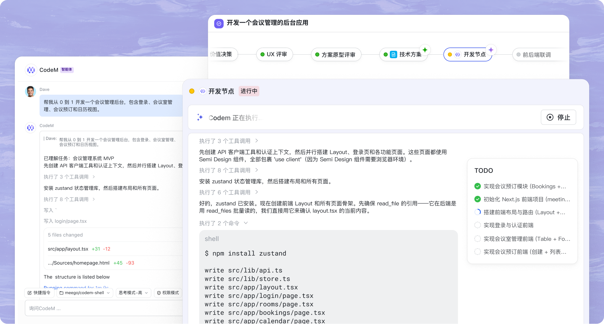

CodeM
CodeM brought AI coding into the team's existing workflow
Live WebsiteContext
Individual speed does not equal team speed.
Coding agents can help one developer move faster, but often start without the decisions behind a task. CodeM extends Meego’s project workflow into coding, so the team can share context and follow progress.
Solution
One agent. Three ways to work.



CodeM CLI
CodeM's broader challenge was to help the whole team move faster. For developers, that meant carrying a requirement received in Lark into the CLI without losing its context.
I led the CLI design from 0 to 1, shaping how the agent makes context, progress, and control visible in the terminal.

Learn the medium
I used five coding agents to study how they communicate actions, feedback, interruption, and recovery.
I then mapped Ratatui’s layout and interaction constraints to understand what the interface could support.
Rethink the homepage
My first direction borrowed too much from desktop UI. Through iteration, I replaced competing panels and status cards with a focused launch state: workspace context stays visible, while the command input remains the primary action.
Make agent work understandable
In a two-day sprint with the PM and developer, I designed three key interaction patterns:
- Interruption: give users a clear way to step in while the agent works.
- Task continuity: keep the current task and progress visible when work runs long.
- Plan Mode: make planning distinct from execution.
Intervene

Progress list

Plan mode

Task continuity

More features

Landing Page
I designed and built the CodeM landing page, carrying the visual system from Figma into a responsive, interactive website.
Translation & interaction design
I developed a more efficient way to translate Figma designs into working pages: focus each Codex task on a small, clear target, then compare the result with the design in the browser. Repeating that cycle helped me improve visual fidelity while using fewer tokens.
I treated interaction as a way to explain the product. I turned key screens into short animations and interactive moments, choosing motion that helps visitors understand what CodeM does without relying on more copy.

Admin Console
I also designed CodeM’s reporting experience, bringing enterprise and workspace usage into one view. Explore task activity, change the date range, and zoom into trends.
Explore the demoReflection
I learned that a useful coding agent needs to carry team context into execution and make its progress and controls clear. Designing CodeM across the CLI, landing page, and admin console taught me to express that idea in ways that fit each surface.